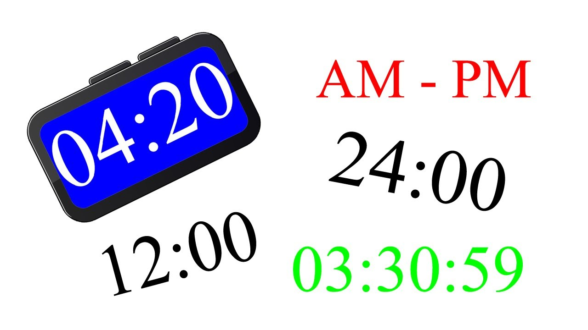

En el latín es donde se encuentra el origen etimológico del término hora. En concreto, deriva de “hora” que, a su vez, emana de la palabra griega “hora”, que tiene el mismo significado que para nosotros. Es interesante saber también que en Grecia las “Horai” eran precisamente las diosas de las estaciones del año.
Una hora es una unidad temporal equivalente a 60 minutos o a 3600 segundos. Cada día se divide en 24 horas: por lo tanto, dos días suman 48 horas, tres días acumulan 72 horas, etc.
Aunque la hora equivale a un tiempo específico (60 minutos), el término también tiene otras connotaciones de acuerdo al contexto. La hora, en este marco, puede tratarse del instante adecuado u oportuno para realizar algo: “Hace varios días que está rota la ventana, ya es hora de llamar a alguien para que la repare”, “¡Llegó la hora de la diversión! Comienza el recreo…”, “Por favor, guarda silencio: es hora de descansar”.